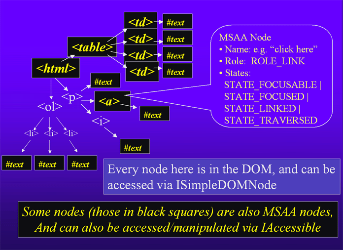

This document is for developers working to support MSAA in an application in order to make it accessible with 3rd party assistive technologies, as well as for hackers wishing to be involved in Mozilla's MSAA support specifically.
If you're implementing controls/widgets, you should also see the Accessible Toolkit Checklist. If you're interested in more about Gecko's MSAA implementation, read Gecko Info for Windows Accessibility Vendors to learn how MSAA clients can utilize Gecko's MSAA support.
MSAA is the Microsoft Active Accessibility (MSAA) API, used on Windows operating systems to support assistive technologies for users with disabilities.
Third party assistive technology, such as screen readers, screen magnifiers and voice input software, want to track what's happening inside Mozilla. They need to know about focus changes and other events, and it needs to know what objects are contained in the current document or dialog box. Using this information, a screen reader will speak out loud important changes to the document or UI, and allow the user to track where they navigate. The screen reader user can navigate the web page using screen reader commands or browser commands, and the two pieces of software must remain in sync. Some screen readers can even show information on a refreshable braille display. Screen magnifiers will zoom to the focus, keeping it on the screen at all times, or even allow the user to enter a special low vision document reading mode, with a variety of features such as ticker mode where text is streamed on a single line. Finally, voice dictation software needs to know what's in the current document or UI in order to implement "say what you see" kinds of features.
On Microsoft Windows, these kinds of assistive technology acquire this necessary information via a combination of hacks, MSAA and proprietary DOMs. MSAA is supposed to be the "right way" for accessibility aids to get information, but sometimes the hacks are more effective. For example, screen readers look for screen draws of a vertical blinking line, to determine the location of the caret. Without doing this, screen readers would not be able to let the user know where there caret has moved to in most programs, because so many applications do not use the system caret (Gecko does not). This is so commonly done, that no one even bothers to support the MSAA caret, after all the hack is general solution works with pretty much all applications.
MSAA provides information in several different ways:
To really learn about MSAA, you need to download the entire MSAA SDK. Without downloading the SDK, you won't get the extremely useful tools, which help a great deal in the learning process. The Accessible Event Watcher shows what accessible events are being generated by a given piece of software. The Accessible Explorer and Inspect Object tools show the tree of data nodes the Accessible object is exposing through COM, and what the screen boundaries of each object are. In addition, MSDN has improved their MSAA documentation.
It's a common mistake to say that MSAA is not worth using, for a number of reasons.
Myth: MSAA doesn't really work
Reality: MSAA works really well for dialogs and UI. True, it's not great for documents, but it's the only existing widely-used standard for exposing accessibility.
Myth: MSAA is too slow
Reality: Assistive technology vendors have found ways around most of the performance problems related to out-of-process COM method calls. Just make sure to have decent performance on your end.
Myth: "MSAA sucks"
Reality: This statement may come from another engineer or even an employee of an AT vendor. And what are they recommending for an alternative, a proprietary solution? MSAA is by no means perfect, but it is the only thing that will make your custom UI elements work with most assistive technologies. Try to be careful that AT vendors do not lock you into a proprietary solution that will work with only their products.
Related Myth: MSAA is not supported by AT vendors
Reality: It's a standard, and it is supported by JAWS, Window-Eyes, ZoomText, Dragon and Supernova/HAL. There's currently nothing better.
Myth: MSAA has no documentation
Reality: You're reading useful documentation right here. The docs on MSDN are useful as well.
Mostly myth: MSAA is too expensive to implement
Reality: *Too* expensive is relative, and depends on how important accessibility is for your project. This document's Deciding Which MSAA Features to Support section attempts to lower the cost by showing which parts of MSAA are not very important to work on. You only need to support MSAA on the non-standard controls in your app. So, it's not too bad.
Mostly myth: Microsoft is abandoning MSAA in Longhorn
Reality: Microsoft's accessibility strategy is changing to a new API in Longhorn. MSAA will still be supported through an emulation layer, but that will probably be a very slow solution. We'll have to wait and see how good the MSAA support in Longhorn is, before we can call this one.
The IAccessible interface is used in a tree of IAccessible's, each one representing a data node, similar to a DOM.
Here are the methods supported in IAccessible - a minimal implementation would contain those marked "[important]":
For information on what each event does, see the MSDN Event Constants page.
Check with your assistive technology partners to find out what events you need to support. There's a very good chance they won't ask for more than the events marked [important]:
| EVENT_SYSTEM_SOUND EVENT_SYSTEM_ALERT [can be important, to have auto-speaking for newly created ROLE_ALERTs] EVENT_SYSTEM_FOREGROUND EVENT_SYSTEM_MENUSTART [important] EVENT_SYSTEM_MENUEND [important] EVENT_SYSTEM_MENUPOPUPSTART [important] EVENT_SYSTEM_MENUPOPUPEND [important] EVENT_SYSTEM_CAPTURESTART EVENT_SYSTEM_CAPTUREEND EVENT_SYSTEM_MOVESIZESTART EVENT_SYSTEM_MOVESIZEEND EVENT_SYSTEM_CONTEXTHELPSTART EVENT_SYSTEM_CONTEXTHELPEND EVENT_SYSTEM_DRAGDROPSTART EVENT_SYSTEM_DRAGDROPEND EVENT_SYSTEM_DIALOGSTART EVENT_SYSTEM_DIALOGEND EVENT_SYSTEM_SCROLLINGSTART EVENT_SYSTEM_SCROLLINGEND [possibly important, talk to AT vendor] EVENT_SYSTEM_SWITCHSTART EVENT_SYSTEM_SWITCHEND EVENT_SYSTEM_MINIMIZESTART EVENT_SYSTEM_MINIMIZEEND |
EVENT_OBJECT_CREATE [don't implement, watching system generated versions of this event causes assistive technology crashes] EVENT_OBJECT_DESTROY [don't implement, watching system generated versions of this event causes assistive technology crashes] EVENT_OBJECT_SHOW [can be important, depending on project] EVENT_OBJECT_HIDE [can be important, depending on project] EVENT_OBJECT_REORDER [important for mutating docs] EVENT_OBJECT_FOCUS [important] EVENT_OBJECT_SELECTION [important] EVENT_OBJECT_SELECTIONADD [important for multiple selection] EVENT_OBJECT_SELECTIONREMOVE [important for multiple selection] EVENT_OBJECT_SELECTIONWITHIN [important for multiple selection] EVENT_OBJECT_STATECHANGE [important for checkboxes and radio buttons] EVENT_OBJECT_LOCATIONCHANGE EVENT_OBJECT_NAMECHANGE EVENT_OBJECT_DESCRIPTIONCHANGE EVENT_OBJECT_VALUECHANGE [important for sliders and progress meters] EVENT_OBJECT_PARENTCHANGE EVENT_OBJECT_HELPCHANGE EVENT_OBJECT_DEFACTIONCHANGE EVENT_OBJECT_ACCELERATORCHANGE |
For information on what each state does, see the MSDN State Constants page.
Check with your assistive technology partners to find out what states you need to support. There's a very good chance they won't ask for more than the states marked [important]:
| STATE_UNAVAILABLE [important] STATE_SELECTED [important] STATE_FOCUSED [important] STATE_PRESSED STATE_CHECKED [important] STATE_MIXED STATE_READONLY [important] STATE_HOTTRACKED STATE_DEFAULT [important] STATE_EXPANDED [important] STATE_COLLAPSED [important] STATE_BUSY [important] STATE_FLOATING STATE_MARQUEED STATE_ANIMATED STATE_INVISIBLE |
STATE_OFFSCREEN [important] STATE_SIZEABLE STATE_MOVEABLE STATE_SELFVOICING STATE_FOCUSABLE [important] STATE_SELECTABLE [important] STATE_LINKED [important] STATE_TRAVERSED [important] STATE_MULTISELECTABLE [important] STATE_EXTSELECTABLE STATE_ALERT_LOW STATE_ALERT_MEDIUM STATE_ALERT_HIGH STATE_PROTECTED [important] STATE_HASPOPUP |
For information on what each role does, see the MSDN Role Constants page.
Check with your assistive technology partners to find out what roles you need to support. There's a very good chance they won't ask for more than the roles marked [important]:
There is no need to support the objects marked [inserted by system]. Windows will add those objects to your hierarchy for you.
| ROLE_TITLEBAR [inserted by system] ROLE_MENUBAR [important if you don't use native menus] ROLE_SCROLLBAR ROLE_GRIP ROLE_SOUND ROLE_CURSOR ROLE_CARET ROLE_ALERT ROLE_WINDOW [inserted by system] ROLE_CLIENT [important] ROLE_MENUPOPUP [important] ROLE_MENUITEM [important] ROLE_TOOLTIP ROLE_APPLICATION ROLE_DOCUMENT ROLE_PANE [important] ROLE_CHART ROLE_DIALOG [semi-important, not currently used by all AT's] ROLE_BORDER ROLE_GROUPING ROLE_SEPARATOR [important] ROLE_TOOLBAR ROLE_STATUSBAR [important] ROLE_TABLE [important] ROLE_COLUMNHEADER ROLE_ROWHEADER ROLE_COLUMN ROLE_ROW ROLE_CELL [important] ROLE_LINK [important] ROLE_HELPBALLOON ROLE_CHARACTER |
ROLE_LIST [important] ROLE_LISTITEM [important] ROLE_OUTLINE [important] ROLE_OUTLINEITEM [important] ROLE_PAGETAB [important] ROLE_PROPERTYPAGE [important] ROLE_INDICATOR ROLE_GRAPHIC [important] ROLE_STATICTEXT [important] ROLE_TEXT [important] ROLE_PUSHBUTTON [important] ROLE_CHECKBUTTON [important] ROLE_RADIOBUTTON [important] ROLE_COMBOBOX [important] ROLE_DROPLIST [important] ROLE_PROGRESSBAR [important] ROLE_DIAL ROLE_HOTKEYFIELD ROLE_SLIDER ROLE_SPINBUTTON ROLE_DIAGRAM ROLE_ANIMATION ROLE_EQUATION ROLE_BUTTONDROPDOWN ROLE_BUTTONMENU ROLE_BUTTONDROPDOWNGRID ROLE_WHITESPACE ROLE_PAGETABLIST [important] ROLE_CLOCK ROLE_SPLITBUTTON ROLE_IPADDRESS ROLE_NOTHING |
For information on what each object identifier does, see the MSDN Object Identifiers Constants page.
Check with our assistive technology partners to find out what object identifiers you need to support. There's a very good chance they won't ask for more than the object identifiers marked [important]:
MSAA has a well deserved reputation for quirkiness. It is not "plug and play", and will take a lot of testing/refinement before your solution works with any product. Here are some of it's quirks and some solutions/workarounds:
Problem: Many of MSAA's crash occur because more than one process is refcounting the same objects, and because pointers are being shared between processes. When your application closes, different signals are typically broadcast. For example, the application window closes and the window is blurred. It is impossible to know if and when the 3rd party assistive technology will use one of these signals to release the objects of yours that it is refcounting. This can lead to crashes where it releases something and the wrong time, when some of your dll's are unloaded but not others, and a destructor is called in an unloaded DLL.
Solution: Create a "shutdown" method for each internal accessible object, to remove any references to other internal objects before any of your dll's are unloaded. In order to do this effectively, you will have to keep track of every accessible object that you create. The shutdown method for an accessibility object should be called whenever the document or UI object it refers to goes away. The easiest way to do that is to keep a pointer to an accessible in each internal UI object. If that pointer is non-null, then there is an accessible object for it. Whenever the UI object is destroyed, shutdown it's accessible object as well. In Gecko/Mozilla we are not allowed to keep this extra pointer for each accessible object, so when accessibility is turned on we use a hash table to cache these objects. Such a cache must be kept in perfect sync with the tree of UI and document objects, which is difficult. Therefore, unless 4 bytes extra on each object is critical in your application, just keep the extra pointer around instead of using a hash table.
Also, don't implement EVENT_OBJECT_CREATE or EVENT_OBJECT_DESTROY. Vendors have found that watching these events causes crashes.
Problem: Assistive technologies do not use the MSAA caret. They follow screen draws, looking for a vertical blinking line. Unfortunately, some products can get confused by the vertical lines on other objects, such as list boxes, even though those lines are not blinking. The assistive technology may not see your caret at all.
Solution: Make sure there is a configuration file for each assistive technology specific to your application. Read the manual or help, and find the keystroke or commands for training the caret, and save this information in the configuration file. Make sure the caret always has the same width (1px or 2px) within a given window class. Don't support the MSAA caret unless you need Home Page Reader's desktop reader application to work with your application -- no one else uses the MSAA caret.
Problem: Screen readers ignore the MSAA focus whenever a highlight bar moves, speaking the current highlighted text instead. The implementation of automated highlight tracking reads any text that is currently highlighted, even if it resides in several places on the screen. It does not take into account the problems that commonly occur with this feature, such as speaking the wrong thing, speaking the right thing twice or speaking two different things. Problems can easily happen merely by having two listboxes visible at the same time, because selected listbox items use the system highlight color, even when the listbox itself is not focused. Other problems occur when a piece of static text which has the same color background, which will cause that text to be repeated each time the focus or highlight moves. At least one major screen reader has a feature to turn highlight tracking off, but that's only a global setting, and turning off highlight tracking globally also turns off the speaking of menu items.
Solution: Don't use the system highlight color for items that you don't want spoken when the highlight or focus moves. To fix this for standard listboxes, use owner drawn list items, so that you can change the highlight color when an item doesn't have focus. For listboxes that are not focused, use a different highlight color, to give the appearance that the listbox is no longer focused -- a lighter color for unfocused lists will also make the listbox state more visually obvious and thus more usable for everyone. For popup listboxes used for dropdowns in autocomplete text fields, change the color value by 1 when the user is typing in the textfield as opposed to arrowing through the list. The listbox will still visually appear to be active, but the screen reader behavior is improved by not echoing too much spoken information for each keypress. One downside to this solution is that means that you cannot use "client data" for the list items, because Windows won't allow owner drawn list items to use client data.
Problem: The screen reader or other assistive technology does not track the focus or other events correctly.
Solution: This may be because you are reporting that the events in a different window from the current system focus. The assistive technology may be asking GetGUIThreadInfo for its hwndFocus, and throwing away MSAA events that are not in the currently focused window. Even if you are visibly showing window focus on the correct window, you must also tell the operating system to focus this window before any other accessibility events get fired in it.
Problem: When you test with Accessible Event Watcher in the MSAA SDK, you will see many events that your application did not generate. Microsoft Windows generates some events for you. These can be problematic, because the assistive technology has no way to tell whether the event came from your application or from Windows. For example, when you set window focus, Windows will generate an EVENT_OBJECT_FOCUS event an a ROLE_WINDOW object it also generated for you. If you happen to set window focus after you fired your own EVENT_OBJECT_FOCUS event on an object in the window, your event will be ignored, because assistive technology software tends to pay attention only to the last focus event.
Solution: When an object is about to get focused in a different window, make sure you focus a window before you fire your own focus events for objects inside it. Test using Accessible Event Watcher in the MSAA SDK, and use the settings panel to watch subsets of accessibility events. Count on the assistive technology to make sense out the jumble of extra system-generated events, it's not your problem.
Problem: MSAA expects events to be reported using NotifyWinEvent(eventNum, hWnd, worldID, childID), and there may not be an obvious way to get a window handle and a 32 bit childID for an object. You may be using windowless controls, or have an entire document with lots of objects in a given window. The child ID must be unique, because this is what the assistive technology will use to retrieve the accessible via AccessibleObjectFromEvent() which ends up using get_accChild on the accessible for the given window.
Solution: In Gecko/Mozilla, we did not want to store an extra 32 bit unique ID value on every object. Instead, we hand back a 32 bit value derived from the UI object's pointer, which is unique. We ensure that the value we hand back is always negative. When the get_accChild call comes back, we check our hash table cache for that window to see if there's an accessible object still associated with that unique value. This means the client must use AccessibleObjectFromEvent immediately, because there is a danger that the object will go away, and another different object will be created with the same pointer value.That case seems extremely remote, because information from events is generally retrieved right after the event.
If you're not using a hash table to keep track of unique ID's, store the child ID's and objects for the last 50 or so events in a circular array. In practice, this is enough to keep AccessibleObjectFromEvent() happy.
Problem and solutions: Assistive technology vendors need some things which MSAA does not provide, such as:
Problem: There are three kinds of text equivalents, and it is difficult to know when to use each. Different applications behave differently in this regard. For example, Acrobat uses accessible value for text labels where as most programs use accessible name.
Solution: Be as consistent with Internet Explorer as possible. Use accessible name for most text equivalents, and accessible value for URL's. Don't use accessible description unless you really do have a long description for the object you need to expose -- most assistive technology makes little use of it.
Problem: There are two different roles for text objects, ROLE_STATICTEXT and ROLE_TEXT. ROLE_TEXT is supposed to mean editable text, yet it is sometimes used in conjunction with STATE_READONLY. It's difficult to know when to use which role plus readonly state combination. For example, Internet Explorer uses ROLE_TEXT without STATE_READONLY and ROLE_TEXT with STATE_READONLY for ordinary web page text. However, it uses ROLE_STATICTEXT for labels.
Solution: Use ROLE_STATICTEXT for labels specific to dialog and UI controls, and always use ROLE_TEXT for document text even if the text is not editable (in that case use ROLE_TEXT with STATE_READONLY). Use ROLE_TEXT with the readonly flag cleared for editable text fields.
Problem: Some assistive technologies have inflexible heuristics when it comes to reading links. They may not read the object unless the states are correctly set. Second, they can mishandle the object if it cannot parse the whitespace according to its own rules. Most assistive technologies don't know what to do with links embedded in a dialog, as is becoming more common.
Solution: For links inside documents, make sure the ROLE_LINK object and its child ROLE_TEXT objects all have STATE_LINKED set. For multi-line links with a line break in the middle, make sure there is no whitespace at the beginning or end of any of the accessible names, and make sure there is a \r\n where the line breaks occur in the accessible name for the ROLE_LINK. For an example of how to do this properly, see Internet Explorer or Gecko. Again, if it's not done exactly this way, some links will not be read.
For links inside dialogs, just expose a single ROLE_LINK object and work on a scripting or code change solution with the assistive technology vendor.
Problem: Tree views are difficult to support MSAA in, because the nodes may be constantly changing or lazily instantiated. The screen reader vendors actually use the SysTreeView32 class directly rather than the MSAA support for them, and can thus provide better support for native tree views.
Solution: Look carefully at how Microsoft implements MSAA for its tree views. The tree view object itself handles all of the requests for get_accName for child objects. The child ID is part of the VARIANT structure's information. This means you don't really need to create a separate object for each tree view row, which saves a lot of work. Also, rather than have multiple nested level of objects, treat all of the rows as direct children of the main tree view object. Put the level, i.e. "1", "2", 3", etc. in the value field.
Problem: The assistive technology may interact slowly with your application.
Solution: Try not to calculate the same things more than once or create the same objects more than once. For example, create and cache an object's children when you look for them in get_accChildCount(), so that you can just hand them back when asked for using get_accChild() or accNavigate(). Support IEnumVARIANT so that the MSAA client can ask for a number of children in one call. In custom interfaces, create methods that hand back a lot of data in one call, rather than requiring a large number of calls. Fewer calls are much better because COM Marshaling is slow.
Problem: Every assistive technology uses MSAA differently.
Solution: We don't know of any outright conflicts in the differing uses of MSAA (yet). However, be on guard. If a vendors asks you to do something different from the spec, it's better to check with the other vendors before moving forward. Check to see what applications from Microsoft do in a similar situation.
Problem: For common controls, MSAA is actually less direct than getting the window class and style bits for a window, so AT products only look for it only when necessary. In fact, when a control has its own Window, it's easy for a 3rd party application to know whether the object is disabled, focused, hidden, checked, etc.
Some assistive technologies will look for MSAA if it doesn't already know that the given window class is used for something common. Common examples are Button, ListBox, ComboBox, msctls_statusbar32, msctls_trackbar32, #32770 (dialog class), SysTreeView32, Static, Edit and RichEdit. Other assistive technologies use a whitelist, and must list your window classes somewhere in their implementation, and then turn on MSAA support when a window of that class receives focus. The window class is also used to determine a host of hard-coded behaviors, such as whether or not a screen reader will load the entire MSAA tree into a special buffer for the user to navigate with screen reader commands. This is only supposed to occur for document navigation, not for UI/dialogs. where your application's keyboard commands will be solely used to navigate.
Solution: Contact each vendor who's product isn't using your MSAA, and let them know what window classes you will be using MSAA for. If possible, use a different window class name for documents/content than you use for UI/dialogs. Or, do what Mozilla does - expose a control ID (GWL_ID) of 1 for content, and 0 for UI. Consistent window class names are important for the assistive technology vendors, so that they can determine what code to run for a given window. Don't change window class names after you have shipped a version.
Problem: Unless certain rules are followed, WindowFromAccessibleObject will break, causing the failure of accessibility testing tools like accexplore.exe, and assistive technologies which require knowledge of the window class to know what app-specific configurations to run. WindowFromAccessibleObject works by walking up the parent chain until it finds an object of ROLE_WINDOW. If it can't find one, it fails.
Solution: Allow Microsoft Windows to handle WM_GETOBJECT messages for OBJID_WINDOW. For OBJID_CLIENT, the accessible parent must point to the ROLE_WINDOW object, or at least ensure that it's in the parent chain. The easiest way to do this is to OBJID_CLIENT object cache its parent's window handle and then implement its get_accParent() method to return the results of AccessibleObjectFromWindow(mParentHwnd OBJID_WINDOW, IID_IAccessible, &ptr);
Problem: As described above, screen readers tend to look first for window classes they know, such as Button, ListBox, ComboBox, msctls_statusbar32, msctls_trackbar32, #32770 (dialog class), SysTreeView32, Static, Edit and RichEdit. AT vendors have typically spent the most time making windows with these classes work, so they are fully debugged. In addition, the user comes to expect appropriate behavior for status bars, dialog boxes and tree views based on the fact that most apps use the standard control. Unfortunately, the MSAA implementation often lags. For example, tree views will probably not be accessible with most assistive technologies even if you have a perfect MSAA implementation. Automatic screen reading of dialog boxes and status bars will often not work just because you're using the wrong class name, even if your MSAA implementation is perfect, and everything else about the objects is completely normal.
Solution: There are three things you can do: 1) try to use the standard class names, 2) pressure the screen reader vendor to fix their MSAA implementation or use better heuristics, and 3) get around the problem with 3rd party scripts for those AT's that can use them.
Problem: The assistive technology does not use 50% of what's available in MSAA, e.g. MSAA caret, a lot of events, roles, states and methods. It's difficult to know which things to support.
Solution: Use this document to see what is generally considered important by assistive technology manufacturers. Contact the top vendors early and often as you plan and implement your architecture, to see what's important to them. Implement only what's needed -- supporting everything would take too long for zero results.
Problem: Because assistive technology tends to utilize MSAA as an additional solution resting on top of old hacks, rather than a completely clean and separate way to deal with an application, and because of the quirky nature of MSAA and of the inflexible heuristics that screen readers use, we do not have a "plug and play solution". In addition, assistive technology vendors are tiny companies, often scrambling to keep up with changes in the applications they already support, or new products other than yours which they need to support. It's very difficult to get vendors to spend time testing an MSAA implementation, send feedback or help find out why things aren't working. Time and version commitments often fall through. There is always a belated new version due around corner, after which you will be promised to be the next priority.
Solution: Try to reach out in a friendly manner to the assistive technology company. Be as easy to work with as you possibly can -- this includes being extremely responsive to their bug reports with new test builds, as well as being very communicative about what you have changed and when. Do as much work as you possibly can without their help. See if your organization can offer something they can't get for themselves. Be patient, and set your expectations to a reasonable level. Realize that it's about both pride and revenue for these companies, and that they need to sell a lot of copies of their software to make up the work they put in to support your app. Remember that no matter how small they are, you need them more than they need you, unless your application's accessibility is being demanded by end-users.
The Accessible module is where the Mozilla MSAA implementation lives. Feel free to peruse the source code in the accessible module whenever you want to see how something can be implemented.
The accessible module is also where support for Sun's ATK accessibility API for Linux and UNIX is implemented. For documentation specific to the Mozilla ATK effort, supported by Sun Microsystems, see the Mozilla accessibility on Unix page.
The first thing that happens when an assistive technology wants to watch our application is that calls the Windows API function AccessibleObjectFromWindow(). This usually happens right after a window gets focused.
When the WIN32 API function AccessibleObjectFromWindow() is called, Windows sends the window in question a WM_GETOBJECT message requesting an IAccessible for your root object in the window. In our case, this event is received in mozilla/widget/src/windows/nsWindow.cpp. We send back an IAccessible pointer which can be used by the client to get information about this root object. The assistive technology will use that root IAccessible to traverse the rest of the object tree, by navigating to children and then siblings, etc. Every navigation function such as accNavigate(), get_accChild() and get_accParent() returns an IAccessible pointer.
To create the root IAccessible for a window the first time it gets the WM_GETOBJECT message in, nsWindow.cpp first generates an internal event called NS_GETACCESSIBLE, which is handled in PresShell::HandleEventInternal() via the creation of an nsDocAccessibleWrap for an inner window or nsRootAccessibleWrap for a top level window. These classes implement both nsIAccessible, our cross platform API, as well as IAccessible, which is specific to Windows/MSAA/COM. The cross-platform nsDocAccessible and nsRootAccessible classes they inherit from are then told to start listening for DOM, page load and scroll events. These events cause MSAA-specific events, such as EVENT_OBJECT_FOCUS or EVENT_OBJECT_STATECHANGE, to fire on UI and document objects within the applicable window. We'll explain more about events later in this section.
Until the WM_GETOBJECT message is processed, the Gecko accessibility service is not used, and thus the accessibility.dll is not loaded, so there is almost zero overhead for accessibility API support in Mozilla or Gecko, in the general case. Once the accessibility service is created, however, Gecko loads code to create an object on demand for every UI or document object that should support IAccessible. The created objects are cached in a hash table, and shutdown when they're no longer needed. They may still exist in memory in a nonfunctional state until the assistive technology completely releases them. See the section on accessible roles to see what kinds of objects Gecko support IAccessible for.
After the root or doc accessible for a window has been created and handed back to the MSAA client, it is used to traverse the rest of the IAccessible tree using accNavigation, get_accChild and get_accParent. Any IAccessible will support those methods. We also support IEnumVARIANT::Next() which allows for fast marshaling of all of an objects children to a client via COM. In other words, the assistive technology can say "give me all 20 children of this object into this array". That's much faster than 20 separate calls, one for each child.
In Mozilla, the client has another choice for tree navigation -- it can utilize data stored in the DOM via Mozilla's custom ISimpleDOMNode COM interface. Any IAccessible can be used to QueryInterface to an ISimpleDOMNode, and vice versa for a round trip. However, one might QI ISimpleDOMNode to IAccessible only to find it is null, which means that particular node in question is not exposed in the IAccessible tree. See the following diagram for examples of nodes that do no support IAccessible.

The MSAA tree and the DOM tree are parallel structures, although the MSAA tree is a subset of the DOM tree. QueryInterface() can be used to switch between the interfaces used in the two trees (IAccessible and ISimpleDOMNode). If there is no MSAA node for a DOM node, pAccessible->QueryInterface(IID_IAccessible) will return null.
There are two main kinds of classes in Mozilla's accessibility class hierarchy, platform-specific and cross-platform. All of the platform-specific classes have the word "Wrap" appended to them. The Wrap classes contain implementations and interfaces specific to MSAA or ATK. These platform-specific classes inherit from cross-platform classes, where the most of the implementation is done. For example, nsAccessibleWrap inherits from nsAccessible. Every accessible object in the MSAA tree has an implementation derived from nsAccessible, which exposes accessibility information through nsIAccessible, in a generic cross-platform manner.
This default implementation for nsIAccessible knows how to use nsAccessibleTreeWalker to walk Mozilla's content DOM and frame tree, exposing only the objects that are needed for accessibility. The nsAccessibleTreeWalker class knows what it needs to expose by asking each DOM node's primary frame (a Gecko formatting object) for an nsIAccessible, using the nsIFrame::GetAccessible() method. If nsAccessibleTreeWalker gets an nsIAccessible back, then the DOM node considered to be an accessible object. The nsIAccessible that is returned is either a new one, or reused from the accessibility cache, and the correct type of accessibility object to correctly expose that DOM node through the cross-platform nsIAccessible and MSAA-specific IAccessible interfaces.
Every accessibility object created must be cached, and must inherit from nsAccessibleWrap so that it supports a base implementation of nsIAccessible and IAccessible. Apart from that, it is free to override IAccessible or nsIAccessible methods. In this way each class is tailored to the specific abilities and properties of the HTML or XUL/UI objects it applies to, and can support both MSAA, ATK and hopefully any future accessibility API's we need to support. For example nsHTMLButtonAccessible overrides nsIAccessible::GetAccRole to expose ROLE_BUTTON for IAccessible::get_accRole which uses that.
A more complicated set of nsIAccessible methods which can be overridden are GetAccFirstChild/GetAccLastChild/GetAccChildCount, which allows for objects to define their own descendant subtrees. The default behavior for nsIAccessible::getAccFirstChild is to instantiate a nsDOMTreeWalker, and ask it for the first child. However, nsImageAccessible overrides getAccFirstChild, returning the first area of an image map if there is one, otherwise nsnull. This is necessary because the image map areas can be in a completely different area of the DOM from the image they apply to.
First, keep in mind that most MSAA events aren't utilized by accessibility aids. Therefore we implement only the handful that matter. See the Events cheat sheet above for the list of events we implement. By far the most important one is EVENT_OBJECT_FOCUS.
When a potential accessibility-related event occurs within Mozilla, it is typically listened for by nsDocAccessible or nsRootAccessible. The event listeners on these classes call FireToolkitEvent(), which is implemented for every accessible. Eventually, the event ends up at nsDocAccessibleWrap::FireToolkitEvent() which calls NotifyWinEvent from the Win32 API. NotifyWinEvent is passed arguments for the window the event occurred in, and the ID of the child within that window. Accessibility aids use the Win32 call SetWinEventHook() to register as a listener for these events. Creating a unique child ID for every object within a window can be difficult, see the problem and solution for no unique child ID for object in window.
The assistive technology chooses which events it is interested in learning more about by calling the Win32 method AccessibleObjectFromEvent, which returns the IAccessible to the node corresponding to the child number that had been indicated from NotifyWinEvent(). This ends up asking nsDocAccessibleWrap::get_accChild() for a child IAccessible which matches the child ID we indicated through NotifyWinEvent().
In Mozilla, we use the DOM node pointer in the accessible object as a basis for its child ID, which is also used as a hash key into our cache. We also negate the 32 bit value so that it is always <0, telling us that they're really looking for the IAccessible for an event, not child number x. During the callback, we look up the original accessible node in the nsDocAccessible's cache and return it.
How can this document be improved? Was it useful? Questions? This document is maintained by the Mozilla Accessibility Community; you can reach and give us feedback on the discussion list!